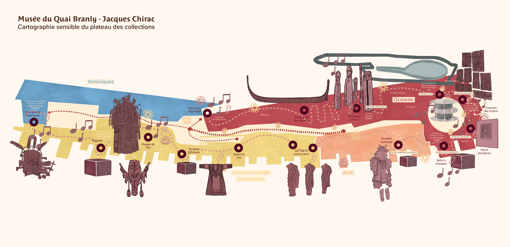
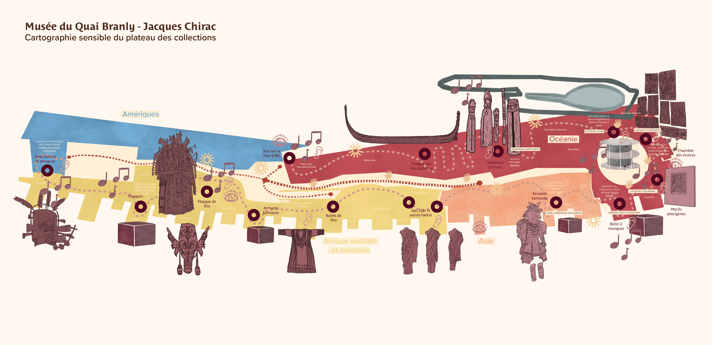

Chercheurs d’art
Projet d'un parcours
sensible au musée
2024
Musée du Quai Branly - Jacques Chirac
Dans le cadre du projet « Chercheurs d’art » avec des classes UPE2A et SEGPA,
nous avons proposé une immersion sonore au cœur des collections du musée.
Cette déambulation collective, ponctuée d’arrêts sur des dispositifs sonores,
permet aux élèves d’appréhender l’espace muséal de manière sensible. Avant d’aborder
les œuvres, les élèves ont exploré le plateau à travers son architecture, ses matériaux
et ses ambiances. En s’appuyant sur des dispositifs d’écoute active et la cartographie
sensible, les collégiens ont opéré un passage de l'écoute à la trace, transcrivant
leur perception intuitive de l’espace. Cette approche a permis de redécouvrir le musée
comme un environnement sensible, transformant le ressenti sonore en un véritable outil
de compréhension spatiale et d’appropriation du lieu.
 
